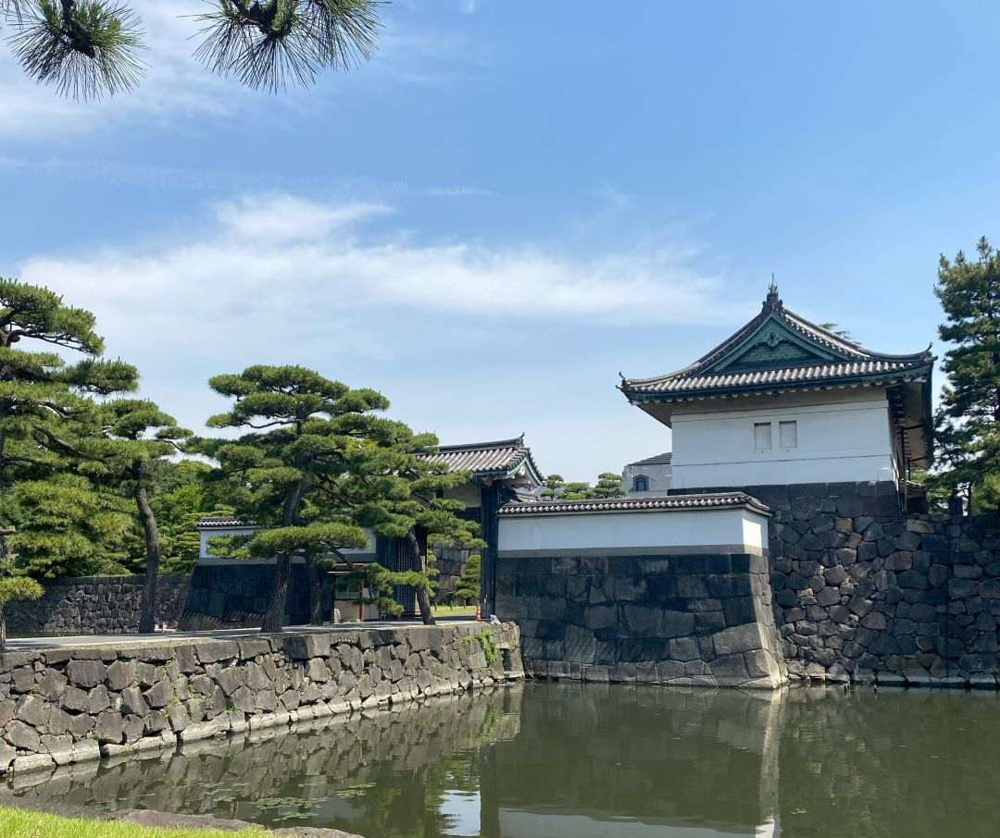

Nijō Castle in Kyoto
Nijō Castle, located in Kyoto, Japan, is a UNESCO World Heritage Site renowned for its historical and architectural significance. Built in the early 17th century, it is a remarkable example of Momoyama and Edo period architecture, featuring ornate interiors, beautiful gardens, and impressive stone walls. One of its most distinctive features is the "nightingale floors" that chirp when walked upon, serving as a security measure to detect intruders. The castle's elegant design, including its well-preserved buildings and serene gardens, offers visitors a captivating glimpse into Japan's feudal past, making it a popular destination for those interested in the country's rich cultural heritage. Nijō Castle was constructed by Tokugawa Ieyasu, the founder of the Tokugawa Shogunate, symbolizing the immense power and influence of that era. The "nightingale floors" not only provided security but also inspired countless poets and writers throughout history, who saw them as a metaphor for the impermanence of life in the ever-changing world.